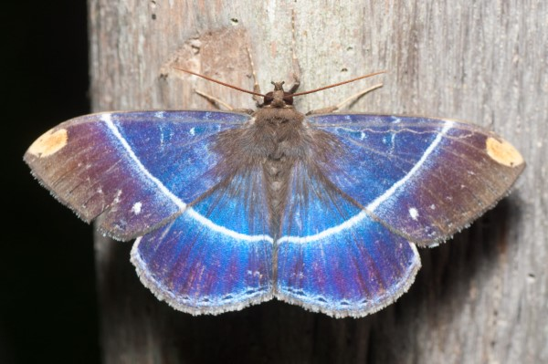
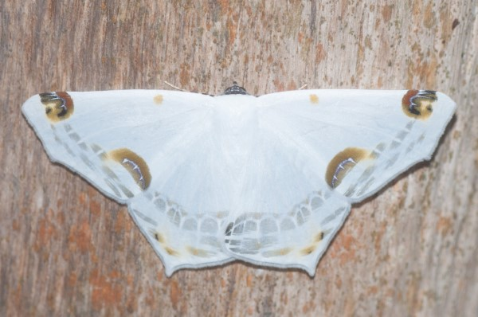
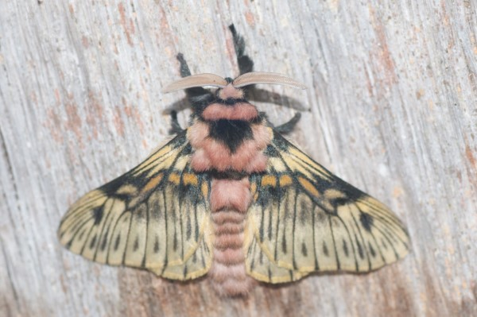
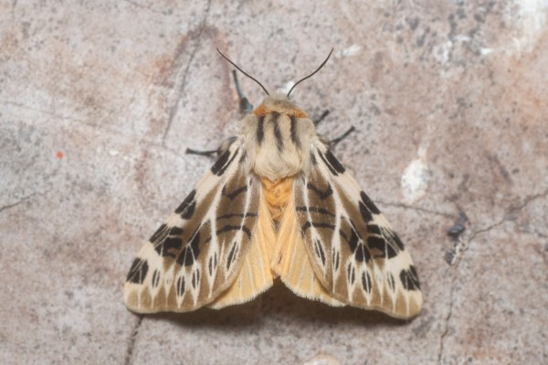
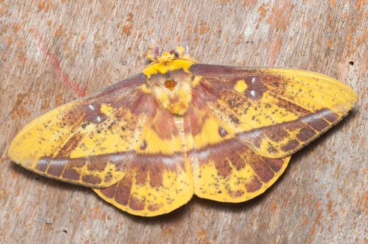
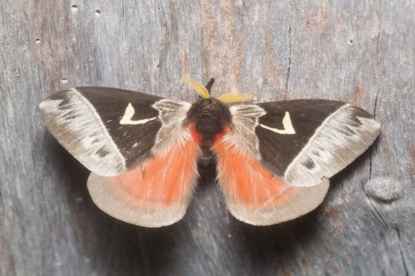
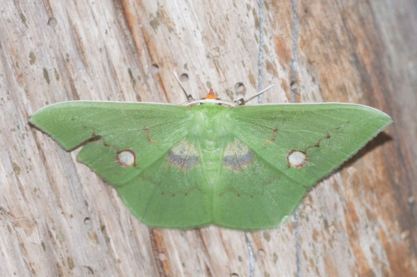
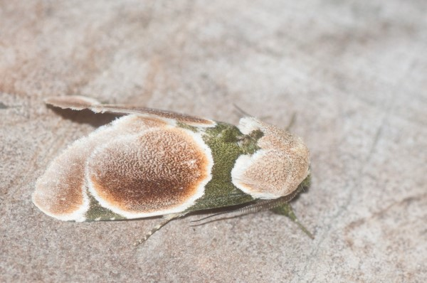
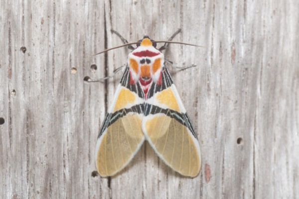
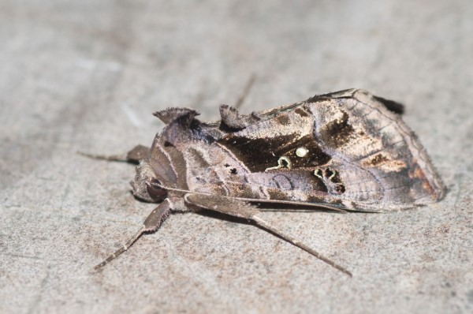
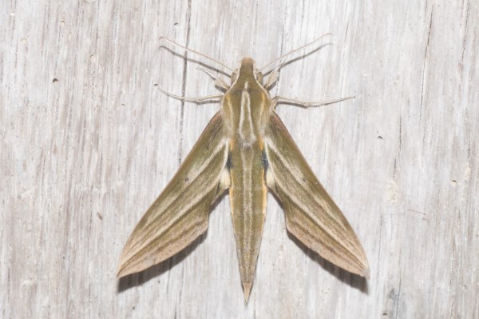
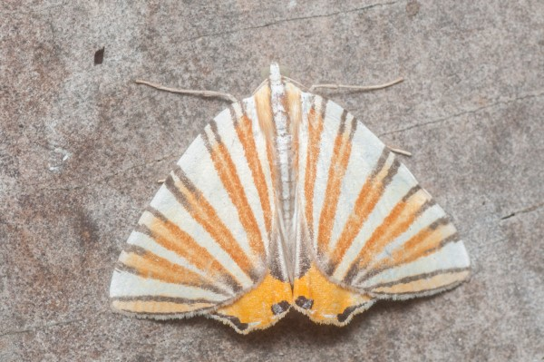
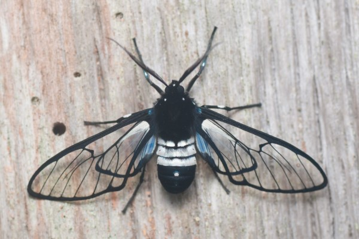
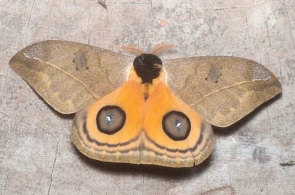
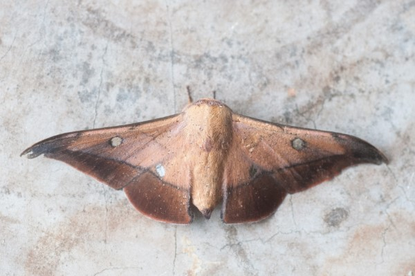
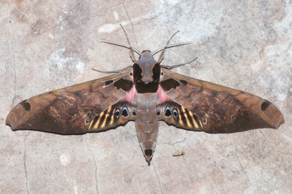
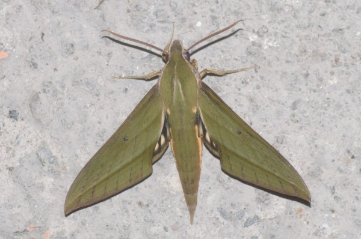
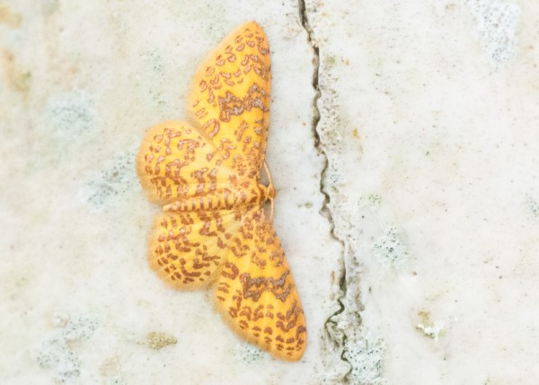
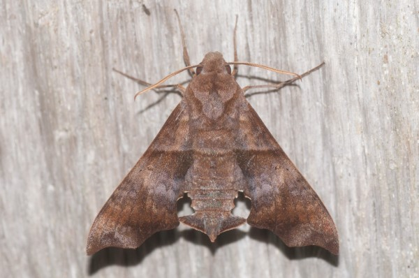
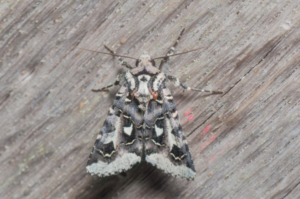
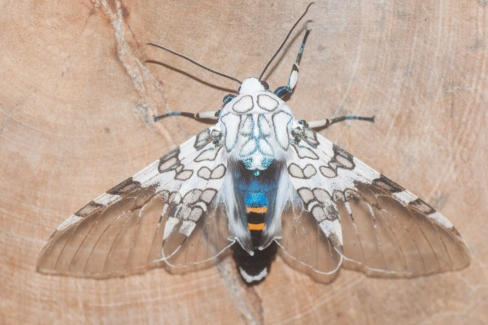
Hypercompe sp.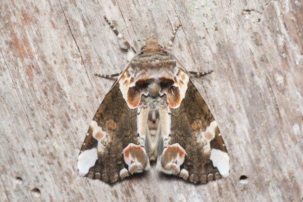
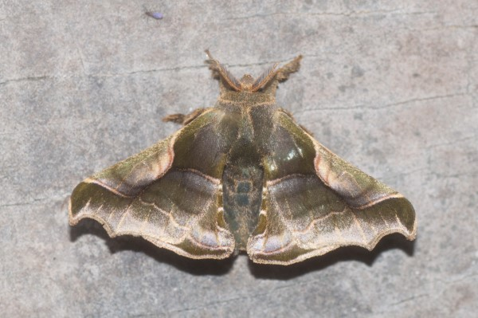
Moths of Yanayacu
In December of 2021 I spent two and a half weeks as a volunteer at the Yanayacu Biological Station. Unfortunately, due to the pandemic there wasn't much ongoing research for me to assist with; so I had ample time for my own projects. One of the projects I took on was documenting the insects that would come to the moth sheet at night.
I've been interested in nocturnal Lepidoptera since I was introduced to moth sheets by a friend a few years ago. Now I always travel with a portable moth sheet setup and I love going to new locations and finding out what moths are there. The east slope of the Ecuadorian Andes is quite possibly the most biodiverse place in the world and this is reflected in the moths. At Yanayacu I found an incredible assortment of both highland and lowland species, including several that are endemic to the Napo province.